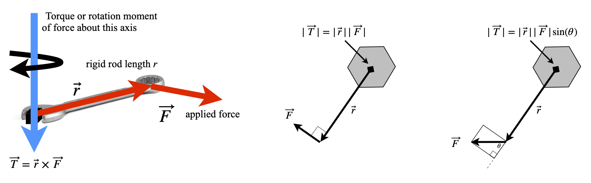
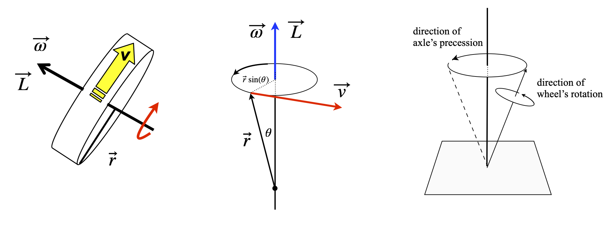
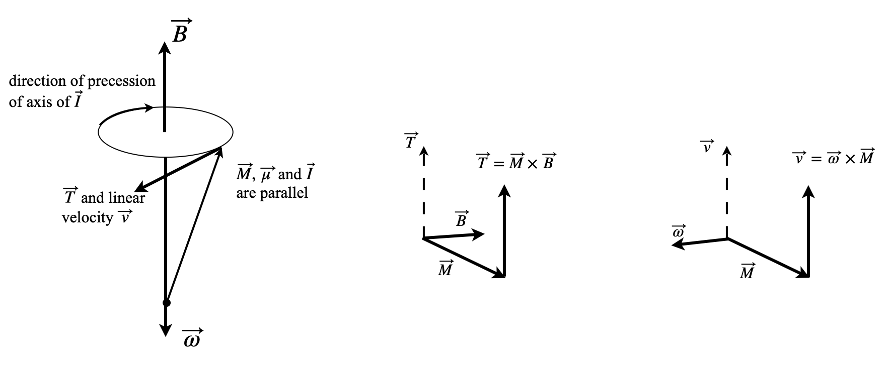

21 Torque and angular momentum
Contents
21 Torque and angular momentum#
21 Torque and angular momentum#
If two objects are joined with a bolt and this is tightened with a spanner, the clockwise motion of tightening causes a force to be applied to the bolt that generates a torque or moment of that force about the rotation axis. The torque has a magnitude that is the force \(F\) multiplied by the length \(r\) of the lever. It is well known that a longer spanner is needed to more easily undo or tighten a stiff bolt. Similarly, if you push on a seesaw, torque is generated about the pivot, and it is easier to move the seesaw if it is pushed at its end rather than close to its centre. If \(F\) is the size of the force that is applied at an angle \(\theta\) at a distance \(r\) from a pivot, then the torque has magnitude \(Fr\sin(\theta)\), thus, only a component of the force is effective.
Next we consider the force and distance to be vectors \(\vec F\) and \(\vec r\) respectively, then by the definition of a cross product \(|\vec F \times \vec r| = |\vec F||\vec r|\sin(\theta) = Fr\sin(\theta)\vec n\). Torque can consequently be identified as a vector in the direction \(\vec n\) and defined as the cross product,
On the left of figure 51, the force is applied at right angles, on the right at an angle \(\theta\), so its value is reduced by \(\sin(\theta)\) in accordance with the cross product. The direction the torque is applied in is determined by the forces and the cross product rule, figure 50, and is in the direction of a right-handed screw.

Left: Figure 50. Torque is the cross product, applied force \(\times\) length of rod. Right Figure 51. Generating torque by applying a force to cause a rotation. Torque acts into the figure.
Torque is generated by molecular motors and has been measured in the rotor of the protein ATPase (Cherepanov & Junge 2001; Panke et al. 2001) as well as in everyday objects such as electric motors and petrol engines. A torque wrench is a common tool for a mechanic to use to tighten engine and wheel bolts, and manufacturers often specify the torque to be applied to particular bolts. Power tools used to tighten wheel bolts often have a clutch that slips at a certain torque to prevent over-tightening. The units of torque are those of energy, but it is a vector and not a scalar, so also has direction.
A polar molecule in a non-polar solvent that is placed in a homogeneous electric field of strength E will produce a torque. The molecular dipole produces the torque and the molecule will try to turn to minimize its energy by aligning itself with the field. However, this motion will be resisted by the surrounding solvent molecules and randomized by thermal motion. Suppose that the molecule’s dipole moment is \(\vec \mu = q\vec r\), where \(\vec r\) is a vector of length \(r\) and \(q\) charge, then the torque is \(\vec \mu \times \vec E\) and this is in the direction that is perpendicular to \(\vec \mu\) and \(\vec E\). The torque operates to minimize a dipole’s energy in the field. At some angle \(\theta\) to the field the dipole has the energy \(\mu E\sin(\theta)\) and by convention when \(\theta = 90^\text{o}\) is chosen to be zero so that the energy (or work done) to reach angle \(\theta\) is the integral
If the dipole and field are made into vectors the energy is \(W = -\vec \mu\cdot \vec E\). A similar calculation would apply if a magnetic dipole were placed in a magnetic field.
Figure 52. Dipole in a field.
21.1 Angular momentum#
When studying the motion of rotating bodies, nuclei, molecules, or footballs we must define angular velocity \(\omega\), angular momentum \(L\), and moment of inertia \(I\), which replace velocity, momentum, and mass respectively as used with linear motion. If you hold a bicycle wheel by its axle with both hands, and spin it in a clockwise direction, so that the wheel spins away from you, then its angular velocity \(\vec \omega\) , a vector of magnitude \(| \vec \omega |\), is perpendicular to the plane of motion and points to your left. This is in the direction of a right-handed screw. The angular momentum \(\vec L\), also a vector quantity, acts in the same direction as the angular velocity and has a value
where \(I\) is the moment of inertia of the wheel. Linear momentum is the quantity \(\vec p = m\vec v\) and therefore, in angular motion, the moment of inertia takes the place of mass and angular velocity that of velocity used in linear motion. Velocity has units of m s\(^{-1}\) and angular velocity \(\omega\) of radian s\(^{-1}\). The moment of inertia has units of mass \(\times\) distance\(^2\) usually kg m\(^2\). Angular momentum has units kg m\(^2\) rad s\({-1}\) or rad J s.
Suppose that a rigid body such as a wheel, rotates about a fixed (say \(z\)) axis, then any point \(p\), not on this axis, has the linear velocity \( v\) in the \(x-y\) plane and so is perpendicular to \(z\) figure 53. If the vector \(\vec r\) joins \(p\) to the axis, then \(p\) moves through a circle of radius \(r\sin(\theta)\) and therefore has linear velocity \( v = \omega r\sin(\theta)\). This is equal to the magnitude of \(|\vec \omega \times \vec r|\) and so
Angular momentum is, by definition,
and in the second step the definition of linear velocity is used. An elementary approach to angular momentum does not treat velocity as a vector, but gives the equation \(L = mvr\). The limited applicability of this equation can be discovered if the triple product is expanded; see Section 18. The result is
In the special case that \(\vec r\) and \(\vec v\) are in the same plane, then \(\vec r\) is perpendicular to the angular velocity making \(\theta = 90^\text{o}\) and the cosine zero. The magnitude of the angular momentum is therefore
where \(r\) and \(v\) are the magnitudes of their respective vectors.

Figure 53. A wheel of radius r set spinning with a linear velocity \(\vec v\) produces angular velocity \(\vec \omega\) and has angular momentum \(\vec L = I\vec\omega\) in the direction shown. Middle: a rigid body rotating about its axis. Right: Precession of the axis of a wheel in a force such as gravity. Precession causes the axis to rotate about the applied field at the same time as the wheel is rotating about its own axis.
To illustrate the application of cross products, a basic NMR experiment is briefly described. You will recall that in these experiments the sample is placed in a large static and homogeneous magnetic field \(\vec B\), and then irradiated with radio-frequency (RF) radiation at right angles to \(\vec B\). The energy of a nucleus with non-zero nuclear spin in a static magnetic field is \(E = -\vec \mu\cdot \vec B\), where \(\vec \mu\) is the magnetic dipole moment vector and \(\vec B\) the static magnetic field vector.
Because the nuclear spin is subject to quantum mechanics, the magnetic dipole moment is written as \(\vec \mu= \gamma \vec I\) where \(\vec I\) is the quantum spin angular momentum and \(\gamma\) the magnetogyric ratio. This is a constant, but different for each type of nucleus, for protons \(\gamma = 26.7\cdot 10^7\;\mathrm{ rad\; T^{-1}\; s^{-1}}\). The proton has two spin states defined with quantum numbers \(I, m_z) = (1/2, \pm 1/2)\) where \(I\) is the spin quantum number and \(m_z\) the \(z\) component also called the magnetic, azimuthal or projection quantum number. The nuclear spin energies are therefore
and the dot product was removed because the applied magnetic field \(B_0\) is only along the z-axis, \(B_0 = |\vec B |\).
When the nuclear spin angular momentum is in the same direction as the magnetic field the lower energy of the two energy levels results and has \(m_z = 1/2\). An NMR transition occurs when one unit of angular momentum is absorbed from, or emitted to, the RF field. The transition energy is always the difference in two energy levels, provided they have a difference of one unit of angular momentum and this energy is always \(\Delta E = \hbar \gamma B_0\). The corresponding transition frequency is \(\omega = \gamma B_0\) rad s\(^{-1}\) and is called the Larmor frequency.
It is also necessary to consider the ensemble of spin states called the magnetization \(\vec M\). This is the vectorial sum of all the individual spin magnetic dipoles, from states pointing with and against the magnetic field \(\vec B\). Consequently, \(\vec M\) will lie exactly parallel to \(\vec B\). As the magnetization is a macroscopic quantity, it can be treated classically in most instances. This means that it is normally subject to the rules of classical mechanics.
When a circularly polarized radio frequency field is applied for a short while, and at \(90^\text{o}=\pi/2\) to the static magnetic field, it induces nuclear spins to move from one state to another. The consequence of this is that magnetization experiences a torque and is rotated away from the direction of field \(\vec B\) and starts to precess , rather as a spinning top does. Precession is the rotation of the axis of a spinning body about the axis of an applied force. The precessing magnetization produces a rotating magnetic field that induces a current in a coil of wire, which, when Fourier transformed, becomes the NMR signal.
The precession is caused because a torque is applied to the nuclear spins, and hence magnetization, by the static magnetic field, and is analogous to that observed by a spinning top (gyroscope) in a gravitational field.
The magnetization’s angular frequency has the same value \(\vec \omega\) as that of the NMR transition, but its angular velocity points in the opposite direction to the field if \(\gamma\) is positive, i.e. \(\vec \omega = -\gamma\vec B\). To show this, the direction of the torque has to be calculated. The torque \(\vec T\) on the magnetization is \(\vec T = \vec M \times \vec B\) and is therefore at \(90^\text{o}\) to \(\vec M\) and \(\vec B\) as shown in figure 54 and which corresponds to the definition given in Section 16. The linear velocity \(\vec v\) must be parallel to the torque and is defined as \(\vec v =\vec \omega \times \vec M\). Consequently, when the magnetogyric ratio is positive the angular velocity \(\omega\) points downwards and the spin precession is anti - clockwise when viewed from below, see figure 54.

Figure 54. Left: precession of magnetisation of nuclei with positive magnetogyric ratio in a field \(\vec B\). Right: sketches of the relative orientation of vectors. These two diagrams need to be rotated to fit that on the left.